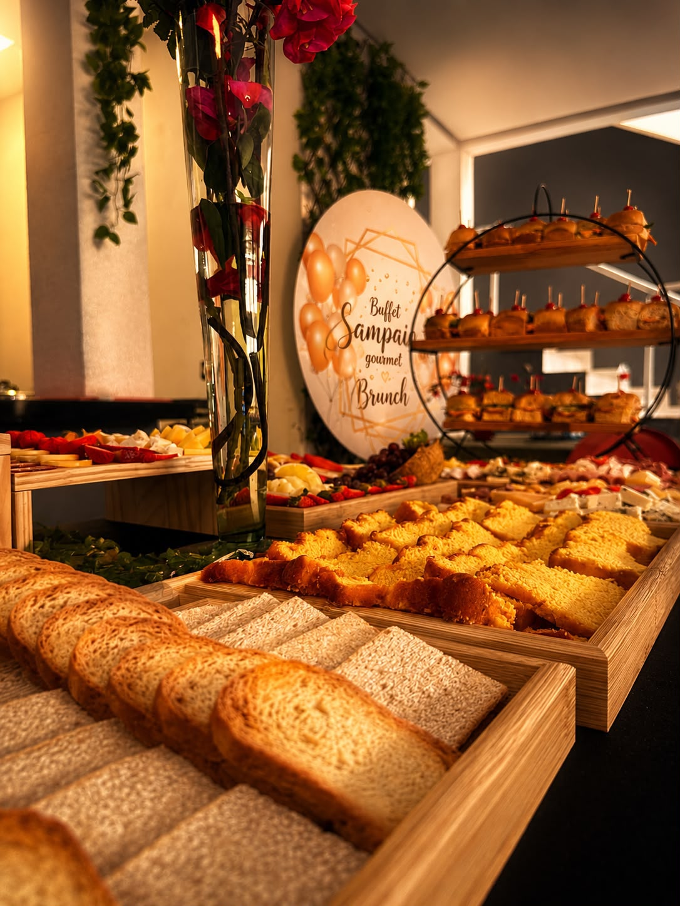
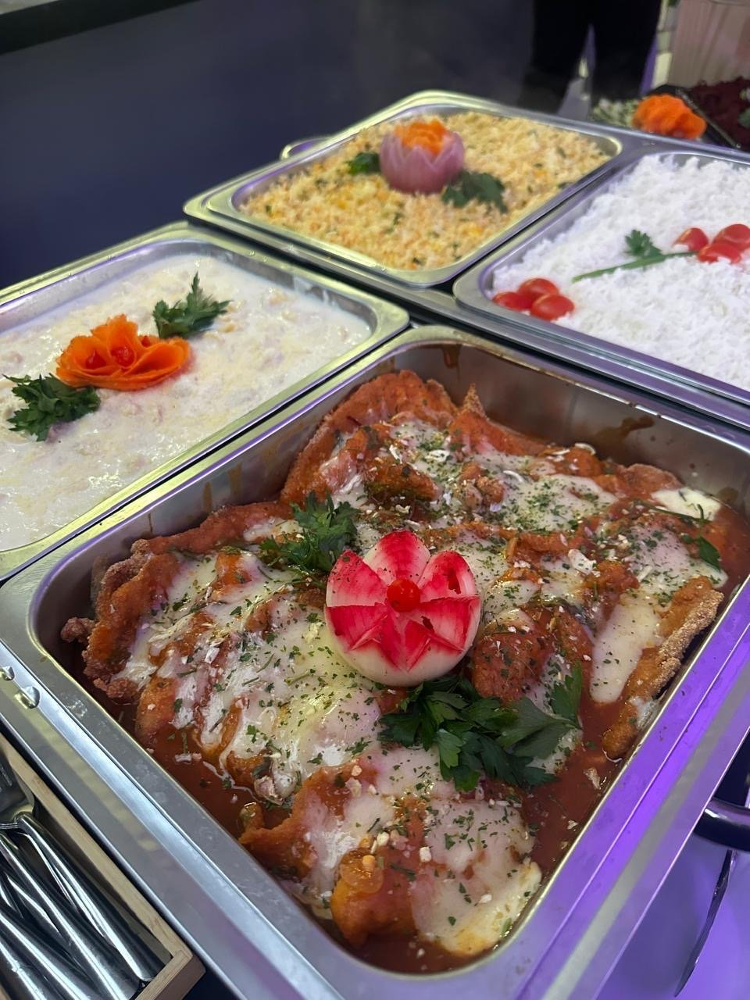
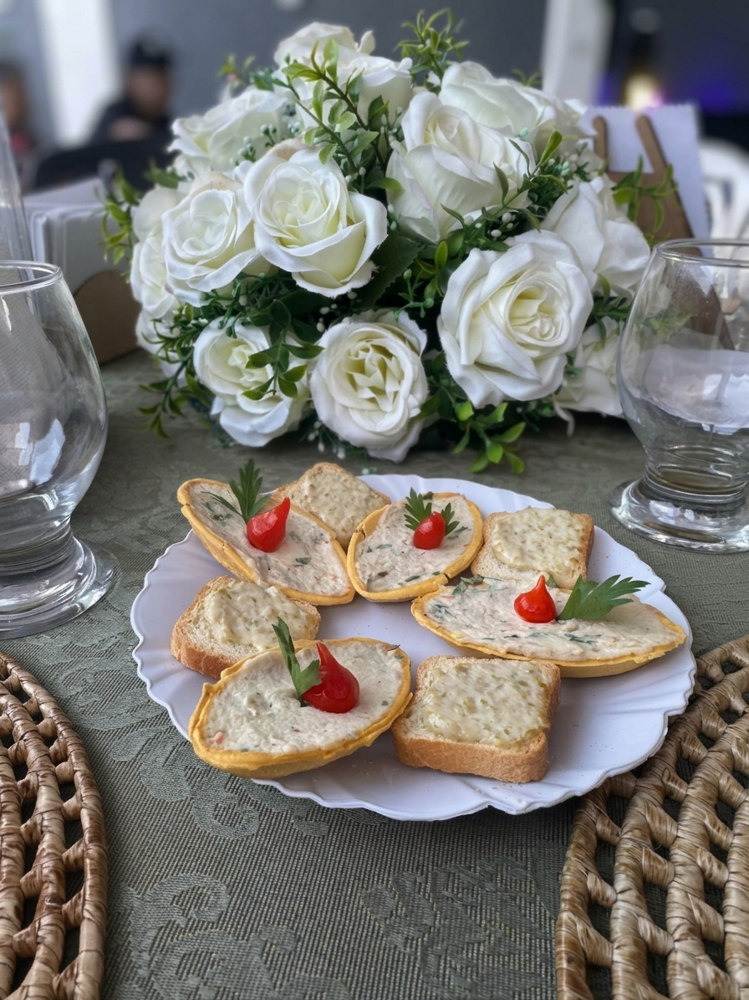
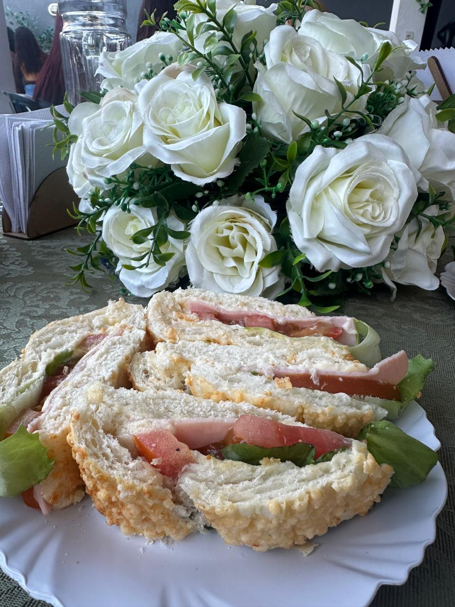
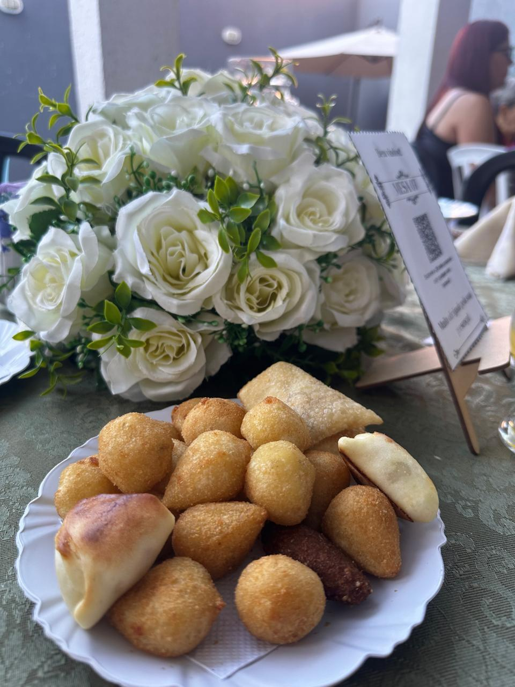

Cardápios
Conheça as opções de cardápio que preparamos para tornar seu evento ainda mais especial.
Opção adicional
Mesa de brunch
Pães, queijos, frutas e delicadezas para complementar seu evento.

Paneteria
Bolos secos, torrada, pães diversos, pão de metro, brioche de queijo prato, lombo em rodela e alface, pão de queijo, pão de forma com patê, empada e quiche
Patês e geleias
Patês
Presunto, azeitonas, frango e ricota
Geleias
Frutas vermelhas, abacaxi e pimenta
Frios e outros
Queijos mussarela, parmesão, ricota, brie, gorgonzola, bastão, gouda, meia lua, peito de peru, mortadela em cubos, presunto, peito de frango em fatias, lombo em fatia, salsicha em conserva, azeitona, salame, ovos de codorna em conserva, damasco, castanha-do-pará, tâmara, nozes, amendoim e tomate-cereja
Frutas
Abacaxi, morango, laranja, uva verde, uva roxa, manga, melancia, coco seco, kiwi ou frutas da época disponíveis
Um toque a mais para celebrar!

Entradas
Salgados:
Coxinha, quibe, esfiha, bolinha de queijo, risole e pastelzinho
Opções adicionais:
- 1- Pão de metro: tradicional ou salpicão
- 2- Canapés com torradas (patê de frango, azeitona ou ricota)
- 3- Mini pizza
- 4- Batata Frita
Almoço · Jantar
Opções:
- 1- Arroz branco
- 2- Arroz à grega
- 3- Arroz biro-biro
- 4- Arroz de forno
Opções de massas:
- 1- Rondelli de presunto e queijo ao molho (sugo ou branco)
- 2- Macarrão pene ao molho (sugo ou branco)
- 3- Raviolli ao molho (sugo ou branco)
- 4- Capeletti ao molho (sugo ou branco)
- 5- Macarrão caracol ao molho branco
- 6- Lasanha à bolonhesa
- 7- Espaguete ao molho
Opções de proteína
- 1- Strogonoff de frango ou carne
- 2- Filé de frango à parmegiana
- 3- Frango empanado
- 4- Lagarto ao molho madeira
- 5- Escondidinho de frango ou carne moída
- 6- Pernil desfiado ao molho
- 7- Cupim ao molho malzebier
Saladas (cortesia)
Alface, tomate, repolho, macarrão colorido, acelga, beterraba e maionese
Bebidas
Sucos:
Polpa ou artificial - sabores variados
Refrigerantes:
Coca-cola, guaraná antárctica, sukita laranja, sprite limão, água (c/s gás)
Opções de sobremesa
- 1- Mousse de Limão ou Maracujá
- 2- Pudim
- 3- Merengue
- 4- Salada de Fruta
Encerramento
Bolo com sorvete de creme, café com petit four na recepção
Sabor, qualidade e momentos especiais!
Entradas
Salgados:
Coxinha, quibe, esfiha, bolinha de queijo, risole, batata-frita
Opções adicionais:
- 1- Pão de metro (tradicional ou salpicão)
- 2- Canapés com torrada (patê azeitona, frango e ricota)
Almoço · Jantar
Opções de arroz:
- 1- Arroz branco
- 2- Arroz à grega
- 3- Arroz biro-biro
Opções de massas:
- 1- Ravioli ou capelletti ao molho (sugo ou branco)
- 2- Macarrão penne ao molho (sugo ou branco)
- 3- Macarrão caracol ao molho branco
Proteínas:
Carne, coxa e asa de frango, filé de frango em fatias, linguiça e pão de alho
Saladas:
Alface, vinagrete, maionese e vagem com cenoura
Bebidas
Sucos:
Polpa ou artificial - sabores variados
Refrigerantes:
Coca-cola, guaraná antárctica, sukita laranja, sprite limão, água (c/s gás)
Opções de sobremesas
- 1- Mousse de limão
- 2- Mousse de maracujá
- 3- Merengue
- 4- Salada de fruta
- 5- Pudim
Encerramento
Bolo com sorvete de creme, café com petit four na recepção
Sabor, qualidade e momentos especiais!

Ilha Gastronômica
Salgados:
Coxinha, quibe, esfiha, bolinha de queijo, risole e pastelzinho
Demais petiscos:
Mini pizza, mini lanche brioche, pão de forma com patê, canapés com patê, pão de metro, bolos secos, baguete recheada, dadinho de tapioca com geleia de pimenta, torta e empada
Opções Quentes
- 1- Rondelli de presunto e queijo
- 2- Buraco quente
- 3- Pernil desfiado
Patês, geleias e frios
Patês:
Presunto, azeitonas, frango e ricota
Geleias:
Frutas vermelhas, abacaxi e pimenta
Frios:
Queijos mussarela, parmesão, ricota, brie, gorgonzola, bastão, gouda e meia-lua; peito de peru, mortadela em cubos, presunto, peito de frango em fatias, lombo em rodelas, salsicha em conserva, azeitona, salame e ovos de codorna em conserva.
Sobremesas
- 1- Mousse (Limão ou maracujá)
- 2- Merengue
- 3- Salada de frutas
- 4- Pudim
- 5- Torta
Bebidas
Sucos:
Sucos diversos
Refrigerantes:
Coca-cola, guaraná antárctica, sukita laranja, sprite limão e água (c/s gás)
Café, café com leite, chá
Encerramento
Bolo com sorvete de creme
Qualidade, sabor e muito carinho em cada detalhe!

Entradas
Salgados, esfiha de carne ou frango, pastelzinho, pão de metro: tradicional ou salpicão, hot dog, mini pizza, batata frita, pipoca, mini hambúrguer, baguete recheada
Prato quente
Penne ao molho branco e sugo
Bebidas
Sucos:
Diversos - polpa ou artificial
Refrigerantes:
Coca, kuat, sukita laranja, sprite, água com gás
Sobremesa
Opções:
- 1- Mousse: limão, maracujá ou morango
- 2- Pudim
- 3- Salada de fruta
Cortesia
Bolo, 100 docinhos, toalhas de mesa, guardanapos de pano
Sabor, diversão e muito carinho em cada detalhe!
Entradas
Esfiha de carne ou frango, pastelzinho, pão de metro: tradicional ou salpicão, hot dog, mini pizza, batata frita, pipoca, mini hambúrguer, baguete recheada
Almoço - Jantar
Principal:
Arroz branco
Massas:
Penne ao molho branco e sugo
Saladas (cortesia):
Alface, tomate, repolho, macarrão colorido, pepino
Bebidas
Sucos:
Diversos - polpa ou artificial
Refrigerantes:
Coca, kuat, sukita laranja, sprite, água com gás
Sobremesa
Opções:
- 1- Mousse: limão, maracujá ou morango
- 2- Pudim
- 3- Salada de fruta
Cortesia
Bolo, 100 docinhos, toalhas de mesa, guardanapos de pano
Sabor, diversão e muito carinho em cada detalhe!

Ilha Gastronômica
Pão de metro: tradicional ou salpicão, pipoca, mini cachorro quente, mini hambúrguer, mini pizza, batata frita, pipoca salgada, dadinho de tapioca, bolos secos, baguete recheada
Salgados
Coxinha, quibe, esfiha de frango ou carne, bolinha de queijo, risole, pastelzinho
Bebidas
Sucos:
Polpa ou artificial, sabores variados
Refrigerantes:
Coca-cola normal e zero, guaraná antártica, sukita laranja, sprite limão
Doces
Opções:
- 1- Mousse de limão ou maracujá
- 2- Salada de fruta
- 3- Pudim
- 4- Torta doce
Cortesia
Bolo com sorvete de creme, café com petif four na recepção
Sabor, diversão e muito carinho em cada detalhe!